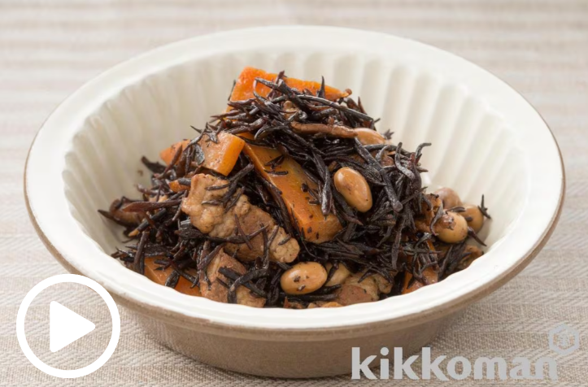

ひじきと豚バラ煮

材料（2人分）
芽ひじき（乾燥） ... 20g
豚バラ肉 ... 50g
にんじん... 20g
大豆（ドライパック）... 50g
ごま油... 小さじ1/2
かつおだし(A) ... 1/3カップ
キッコーマン特選丸大豆しょうゆ(A)
... 大さじ１
マンジョウ米麹こだわり仕込み本みりん(A)
... 大さじ１と1/2
作り方（調理時間:15分/目安）
ひじきは水でもどし、ざるに上げる。。
豚肉は１ｃｍ幅に切る。にんじんは太めの短冊切りにする。
フライパンにごま油を熱し、（２）をさっと炒め、（１）、大豆、（Ａ）を加え、ふたをして１０分ほど煮る。汁気が少し残るぐらいで火を止める。
引用元
キッコーマンレシピサイト「ホームクッキング」